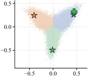
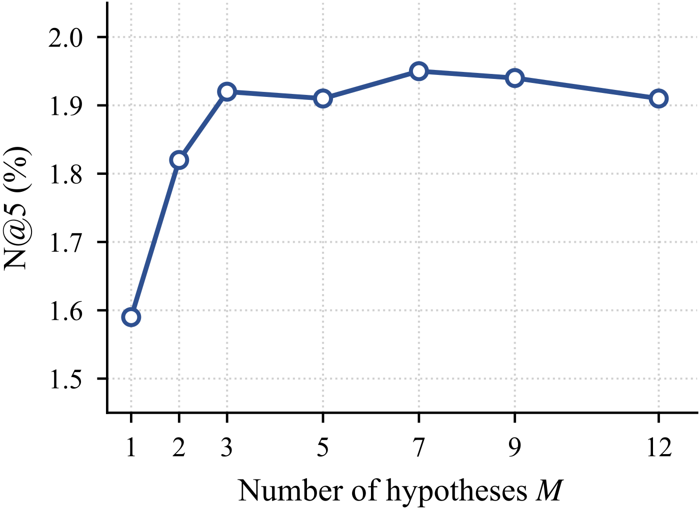

这篇值得做召回和序列推荐的团队读，因为它把“一个用户该用几个向量”这个老问题换了个问法：不靠路由结构去拆兴趣，而是靠训练目标逼几个预测头各管一片物品，并且给出了这样做为什么不会塌成一个头的实验证据。Criteo 和索邦大学的这篇论文提出 COMPOTE：一个共享的因果 Transformer 后面接 M 个预测头，训练时先让所有头一起学，再逐渐变成“只有猜得最准的那个头被更新”，推理时每个物品取几个头里最高的余弦相似度来排序。在三个 Amazon 2023 评论数据集上，它在 12 个指标里拿了 11 个第一，比最强的生成式基线 TIGER 的 NDCG@5 在两个数据集上高约 9.7%；同等参数量下，把预算给单个更深的头、平均训练几个头、或者加路由门控，都比它低。
需要留意的是，三个数据集都只有约 2.5 万个物品，指标是离线的 Hit Rate 和 NDCG，绝对值在 2% 到 9% 之间；放到亿级物品库和线上，效果还要自己验证。
它到底在解决什么问题？
先看一个例子（示意）。一个用户最近买了吉他弦、调音器，又买了一款主机游戏。他的下一个购买可能是拨片，也可能是游戏手柄，两者在物品库里离得很远。
| 做法 | 用户表示 | 排在前面的是什么 |
|---|---|---|
| 单向量模型 | 一个向量，被交叉熵拉到两类物品中间 | 既不太像乐器配件、也不太像游戏配件的东西 |
| 多兴趣模型 | 几个向量，由路由或注意力分配 | 常常几个向量指向同一方向，退化成一个 |
| COMPOTE | 三个头，各自负责物品库的一片 | 一个头排乐器配件，一个头排游戏配件 |
问题的根源是下一个物品的分布本来就有好几个峰。单个向量用交叉熵训练，会停在几个峰的中间，哪个峰都对不准。多兴趣模型想用多个向量解决，但作者的测量显示，如果没有专门的训练目标，几个头的方向会完全重合，相当于还是一个向量。
整体流程
| 步骤 | 输入 | 做什么 | 输出 |
|---|---|---|---|
| 共享编码 | 最近 50 个物品 ID | 物品向量加位置向量，过几层因果 Transformer | 最后一个位置的表示 |
| M 个预测头 | 这个表示 | 每个头是一个小 MLP，各自产出一个向量 | M 个查询向量 |
| 打分 | 查询向量和物品向量 | 算余弦相似度，除以温度后做 softmax | 每个头一份物品分布 |
| 训练 | 真实的下一个物品 | 退火的“赢家通吃”损失，外加一个预测“哪个头会赢”的小头 | 各管一片的几个头 |
| 推理 | M 份相似度 | 每个物品取最高的那个，再排序 | 一个排序列表 |
编码部分和常见的单向量序列模型几乎一样，区别全在最后一层之后：共享主干到最后一个位置为止，之后分成 M 条互不相干的分支，这才给了各个头分工的空间。
训练目标怎么从“一起学”变成“赢家通吃”？
最直接的想法是赢家通吃：每个样本只看哪个头给真实物品的概率最高，只更新那个头。这样一个头学乐器、一个头学游戏是最省力的分工。问题是刚开始训练时某个头碰巧落后，就永远赢不了、永远得不到更新，等于废掉。
所以作者用一个带温度 τ 的损失把它变平滑：
这里 p 是第 m 个头给真实物品 y 的概率。这个损失对每个头的梯度权重，正比于这个头给出的概率的 1/τ 次方。举个例子（示意）：两个头给真实物品的概率分别是 0.2 和 0.05。
| 温度 τ | 头 1 的权重 | 头 2 的权重 | 含义 |
|---|---|---|---|
| 很大 | 约 0.5 | 约 0.5 | 两个头一起学这个样本 |
| 1 | 0.8 | 0.2 | 按概率比例分 |
| 0.25 | 约 0.996 | 约 0.004 | 基本只有头 1 在学 |
τ=0.25 时权重是 0.2 的 4 次方比 0.05 的 4 次方，相差 256 倍，所以几乎全给头 1。训练从高温开始，所有头都能分到梯度、都能先学到一些东西；温度慢慢降到接近 0，损失就变成纯粹的赢家通吃，每个样本只认最准的那个头。作者证明这个损失和音频分离领域的退火多选学习（Annealed multiple-choice learning，让模型输出多个候选、只按最好的那个计损失）梯度完全一致，新东西在于推理时怎么把几个头合起来。
另外还有一个小头，输出 M 个 0 到 1 之间的数，第 m 个表示“头 m 是这个样本的赢家”的概率。标签按当前结果定：给真实物品概率最高的那个头记 1，其他头记 0，每个输出各算一个二分类交叉熵。这部分损失乘以一个权重加进总损失，梯度回到共享编码器，相当于额外要求编码器的表示能分辨该由哪个头负责；推理排序不用它。作者发现它让训练更稳；去掉它时 Scientific 上 NDCG@5 是 1.82，加上最优权重后到 1.92，说明它是加分项而不是必要条件。
推理时为什么能跳过 softmax？
训练时每个头对整个物品库做 softmax，推理时如果也要算，就得对每个用户遍历全库，没法用向量数据库。作者的做法是直接拿余弦相似度：每个物品的分数是 M 个头里和它最像的那个头的相似度，然后排序。
这样做成立的前提是：每个头 softmax 的归一化项差不多大。因为取 log 以后，“取最大的 softmax 概率”等于“取最大的相似度减去各头自己的归一化项”，归一化项一样大时，减掉它不改变排序。作者在 Game 数据集上画了三个头归一化项的分布，几乎重叠，集中在 12.2 到 15 之间。实测也一样：带 softmax 的 NDCG@5 是 4.01，直接用余弦也是 4.01。这意味着部署时每个头就是一条普通的向量检索，M 个头召回后按最高分合并，和多兴趣召回的工程形态一样。
作者还证明了，在理想情况下，即温度降到 0、每个头都训练到最优时，这种取最大的打分和真实分布的排序一致。唯一的例外是有两个物品的真实概率都不低于 1/M。举个例子（示意）：M=3，两个物品的真实概率是 0.4 和 0.35，都超过 1/3，最优解会让两个头各把全部概率放在其中一个物品上，两者都拿满分 1，就分不出先后。M 越大，1/M 越小，越容易出现这种并列，这是 M 不能无限加大的理论原因。
实验结果
实验在 Amazon 2023 的乐器、工业与科学、电子游戏三个类目上做，每个类目约 2.5 万物品，历史截到 50 个，最后一个行为做测试。评估时对全库排序而不是抽样负例，所以数字比很多论文里的低，但更接近真实召回。对比对象有 7 个只用 ID 的序列模型、生成式模型 TIGER（用 Semantic ID 逐 token 生成下一个物品），以及 6 个多兴趣模型。
| 方法 | 乐器 NDCG@5 | 科学 NDCG@5 | 游戏 NDCG@5 | 游戏 Hit@10 |
|---|---|---|---|---|
| SASRec | 2.13 | 1.50 | 3.31 | 8.47 |
| TIGER | 2.44 | 1.75 | 3.66 | 8.68 |
| SINE（多兴趣模型中最好的） | 1.52 | 1.21 | 2.77 | 8.80 |
| COMPOTE | 2.45 | 1.92 | 4.01 | 9.26 |
COMPOTE 只用物品 ID、一次前向，就比用了物品文本和 beam search 的 TIGER 高，说明把多峰建模对了，比加内容信息更划算。多兴趣模型的表现更说明问题：多兴趣模型 SINE 在游戏 Hit@10 上接近 COMPOTE，但 NDCG@5 低 31%，意味着几个兴趣向量扩大了候选面，却没把目标排到最前面。
增益从哪来？作者做了三个参数量相同的对照，用的是同一个编码器。
| 对照 | 做法 | 游戏 NDCG@5 | 几个头的平均余弦相似度 |
|---|---|---|---|
| 单头加深 | 把参数给一个更深的头 | 3.78 | 只有一个头 |
| 平均训练 | M 个头每个样本都等权更新 | 3.78 | 1.00 |
| 路由门控 | 学一个门，每个样本选一个头 | 3.78 | 1.00 |
| COMPOTE | 退火赢家通吃 | 4.01 | 0.58 |
后两种的头方向完全重合，余弦相似度是 1，也就是塌成了一个头；COMPOTE 的三个头明显分开。所以增益不来自参数多、不来自集成、也不来自路由，而来自训练目标让头真正分了工。

分工有多彻底？在游戏数据集上，两个头的前 10 名列表平均 Jaccard 重叠只有 0.008，91.8% 的被召回物品只被一个头召回；每个头 91.5% 到 93.7% 的概率质量落在自己的那片里，各头赢的样本比例都在三分之一左右。这说明几个头不是在细微地互相补充，而是近乎互不重叠地把物品库分成了几块，而且分得比较均匀。
还有一个更直观的数字：假如事先知道目标物品，每次挑给它余弦相似度最高的那个头单独排序，和现在取最大的合并排序相比，NDCG@5 在三个数据集上分别提升 53%、83%、94%（比如游戏从 4.01 到 7.78）。这个“知道答案再挑头”的上限没法上线，只用来衡量几个头有没有各自的长处。平均训练和路由门控做同样的事一点提升都没有，因为它们的头本来就一样。这既证明了几个头包含互补信息，也说明取最大的合并规则还有很大空间。

头数的选择上，M 从 1 到 3 时 NDCG@5 从 1.59 升到 1.92，再加到 12 基本不变。这和作者的泛化界一致：头数只以对数的方式影响过拟合风险，多加几个头不会明显变差，但也没有更多收益。
我看到的局限
第一，规模太小。三个数据集都是约 2.5 万物品、最多 9.5 万用户，Hit@10 只有 4% 到 9%。工业召回动辄千万到亿级物品，三个头各管一片的划分在那种规模下是否还均匀、是否需要几十个头，要靠自己的数据去测。
第二，合并规则离上限还很远。知道目标时挑头能让 NDCG@5 提升 53% 到 94%，而现在取最大的做法只拿到其中一小部分。几个头之间的分数怎么比，目前全靠归一化项恰好接近，换一个数据分布这个前提可能就不成立，需要先检查各头归一化项的分布。
第三，没有线上和延迟数据。M 个头意味着 M 次向量检索再合并，召回成本大约是单向量的 M 倍；论文只在离线全库排序上评估，对比的多兴趣模型也是作者自己按同一流程重训的。
一个召回团队可以怎么试
- 先做最便宜的诊断：如果已经在用多兴趣召回，算一下几个兴趣向量的平均余弦相似度。接近 1 就说明已经塌缩，多出来的向量只是在浪费检索成本。
- 在现有单向量双塔的用户塔顶部加 3 个 MLP 头，换成退火的赢家通吃损失，温度从高往低降，其他不动。
- 上线时每个头各做一次向量检索，按最高相似度合并去重；先检查各头归一化项是否接近，再决定能不能省掉 softmax。
- 头数从 3 开始，不要一上来就加很多，论文里 3 之后就不再涨。
结论
这篇最值得记住的一点：多兴趣召回缺的往往不是更多向量，而是让向量分工的训练目标，用退火的赢家通吃就能做到，而且推理形态和现有向量检索兼容。
| 维度 | 评价 |
|---|---|
| 问题重要性 | 高。单向量召回对多峰兴趣的处理是普遍短板 |
| 方法创新性 | 中。损失来自音频分离的退火多选学习，新意在用到推荐并给出合并规则和理论 |
| 实验证据 | 中。对照实验设计干净、塌缩测量直接，但只有三个小数据集的离线指标 |
| 工程成本 | 低到中。改动只在用户塔顶部和损失，代价是检索次数乘以 M |
| 是否值得尝试 | 值得，尤其适合已有多兴趣召回、怀疑向量塌缩的团队 |
读完这篇，你觉得
夜读鸮记下了，谢谢你的反馈。
点一下即可，无需登录；再点一次撤回。只统计匿名次数，不记录你是谁。
讨论
欢迎补充实验细节、复现经验或不同看法。需 GitHub 登录。
正在加载讨论…